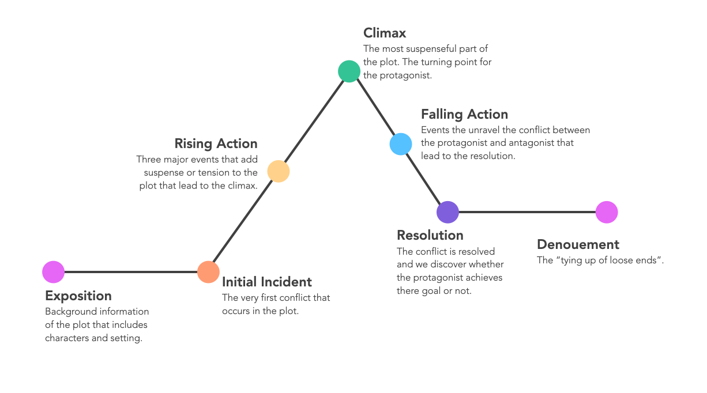

Before learning about design patterns, I never realized that there are a general set of solutions that I use to solve common recurring problems. However, after figuring out what exactly a design pattern is in a software engineering context, I recognized that most software engineering solutions are built off of basic design patterns. Outside of software engineering, design pattern concepts can also be applied to other things like storytelling.
Design patterns are general solutions that can be used to solve common problems. Various design patterns set up a basic solution, simplify the coding process, and maintain the code’s reusability. In a sense, these are templates that can be applied to solve various recurring issues.
As a creative writer, I relate design patterns to storytelling. Most stories follow a basic pattern. Readers meet the main character, the protagonist encounters a conflict, figure out how to overcome said conflict, and in the end, they succeed (most of the time) at overcoming their obstacle(s). However, there are different types of stories, different ways stories unfold, and plot twists along the way to the resolution that makes each story unique.
First, when starting a story, authors need to figure out what they want to write about by establishing a basic plotline. Next, various elements such as plot twists, character development, and dialogue are added to give the story more flavor, bringing it to life.
Similarly, there are basic design pattern templates that can be used as a starting point to solve recurring problems. Once the basic design pattern is established, coders can modify the solution to fit the issue’s more specific needs and enhance the current program’s efficiency and reusability.
Despite learning about design patterns and the different types of patterns, understanding it conceptually can be difficult since it uses technical software engineering jargon. When I struggle to understand high-level concepts, the best way I learn is through examples and seeing how these concepts can be applied to my past or current coding projects.
Among the different design patterns, the observer design pattern stood out to me, as I used it often in my coding projects. The observer design pattern is when an object’s state changes and a different set of objects must be informed of this change. Using an example to clarify what this means, there are two instances where this design pattern is used in one of my ongoing projects.
With a few of my classmates in a software engineering course, I’m working on a website called Manoa Study Abroad Central, which is meant to help UH Manoa students determine which study abroad program and/or country is best for them. One feature of the website is a program selection page where students can find more information about a study abroad program or read about other people’s personal experiences in a specific country. On the program selection page, there are two drop-down menus. The first dropdown menu allows students to select “Program” or “Country/Region”. If the user chooses “Program”, the second dropdown menu lists the three different study abroad programs at UH Manoa and allows students to select and view more information about these programs. If a student chooses “Country/Region”, the second dropdown menu is populated with a list of different countries they could study abroad. Upon the selection of a country, the page then takes the student to a different page that only shows student testimonies related to the specified country.
Another example is Manoa Study Abroad Central’s admin home page. When users make a new post, administrators are notified of this change and can review the post to ensure that post follows community guidelines. Additionally, when a study abroad program or post is added to the site, the number of programs or posts are updated and the admin(s) can view data on the admin home page regarding how many programs or posts are added to the website.
Although it’s difficult to understand conceptually, software engineering design patterns are useful knowledge. These design patterns offer a basic, reusable solution template that can be used for simple recurring problems. Similar to a story arc, the design pattern templates give coders a base solution to start from, which programmers can then modify to fit the issue’s specific needs and simply the coding process.